AAIC Sobre
Sobre a AAIC
Associação Atlética do Instituto de Computação da UFF: três cursos, uma só identidade.
Nossa história
De duas atléticas, uma só
Antes de 2026 · duas atléticas
Há muitos anos, surgiram a Associação Atlética Acadêmica Ada Lovelace e a Associação Atlética de Sistemas de Informação. Dividíamos o mesmo prédio e a mesma paixão, mas éramos separados, cada uma com sua própria identidade, suas próprias tradições e seus próprios desafios.
Com o tempo, percebemos que, apesar das diferenças, juntos éramos mais fortes. A rivalidade sempre acabou em momentos incríveis que nenhuma das duas teria vivido sozinha.
E então, em um momento de união e visão de futuro, nasceu a ideia de juntar forças. Não para apagar o passado, mas para construir um futuro ainda mais brilhante.
Em vez de continuar separados, escolhemos evoluir.
Três cursos deixaram de ser partes isoladas para formar uma só identidade.
2026 · nasce a AAIC
Assim, em 2026, nasce a AAIC UFF. Inspirados na ideia de crescer mesmo diante dos desafios, transformamos diversidade em força.
- Ciência da Computação
- Sistemas de Informação
- IA e Ciência de Dados
Diferentes origens. Um só propósito.
E uma história que ainda está sendo escrita, por todos que fazem parte dela.
Missão
Formar a atlética mais forte e unida da UFF, desenvolvendo pessoas dentro e fora das quadras (e cantareiras), e criando uma comunidade que cresce junto, compete junto e se representa com orgulho.

Mascote
Por que Hipátia?
Hipátia de Alexandria (c. 360–415) foi matemática, astrônoma e filósofa, e uma das professoras mais respeitadas do seu tempo. Ensinava geometria e astronomia em Alexandria e é a primeira matemática cuja vida conhecemos com algum detalhe.
Boa parte do trabalho dela era cálculo. Atribuem-se a ela comentários sobre a Aritmética de Diofanto, um marco da álgebra; sobre as Cônicas de Apolônio, as curvas que hoje descrevem órbitas e a trajetória de uma bola; e sobre as tabelas de Ptolomeu, que permitiam prever o céu fazendo contas. Seu aluno Sinésio conta que projetou um astrolábio, uma calculadora do céu em metal, com o que aprendeu com ela: o mesmo instrumento que abre este site.
Muito antes de existir computador, já havia quem fizesse contas para entender o mundo. É dessa linhagem que vem a Computação, e foi nela que a AAIC encontrou a sua mascote.